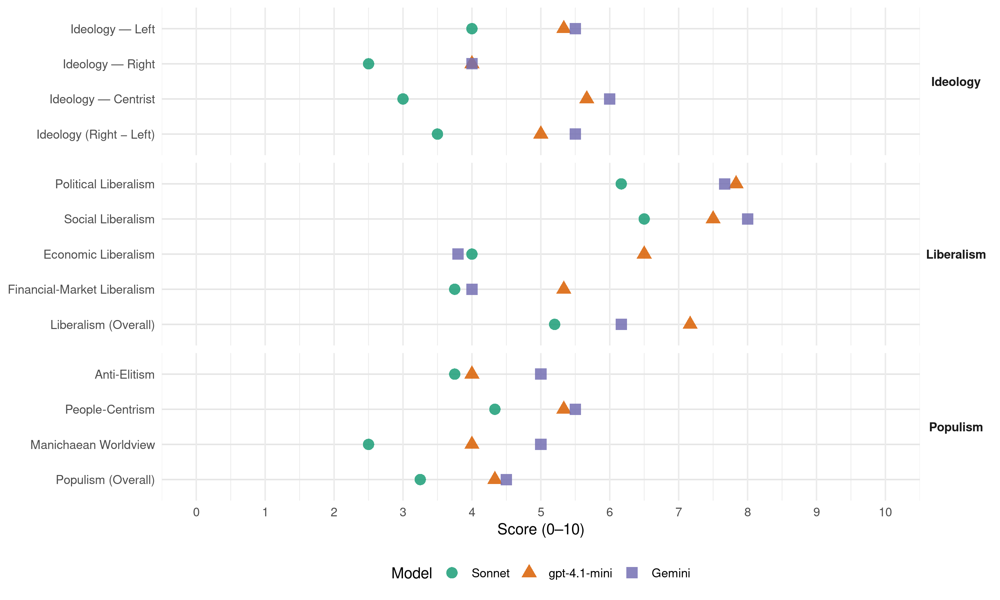

Sp (Norway, 2009)
manifesto_id 12810_200909
Get full text: This site shows derived annotations and short verbatim quotes only. The full manifesto text is © Manifesto Project / WZB — obtain it via manifesto-project.wzb.eu using the manifesto_id above.
Headline scores
| Dimension | Sonnet | gpt-4.1-mini | Gemini |
|---|---|---|---|
| Populism (Overall) | 3.2 | 4.3 | 4.5 |
| Anti-Elitism | 3.8 | 4.0 | 5.0 |
| People-Centrism | 4.3 | 5.3 | 5.5 |
| Manichaean Worldview | 2.5 | 4.0 | 5.0 |
| Ideology (Right − Left) | 3.5 | 5.0 | 5.5 |
| Liberalism (Overall) | 5.2 | 7.2 | 6.2 |
| Political Liberalism | 6.2 | 7.8 | 7.7 |
| Social Liberalism | 6.5 | 7.5 | 8.0 |
| Economic Liberalism | 4.0 | 6.5 | 3.8 |
| Financial-Market Liberalism | 3.8 | 5.3 | 4.0 |
Evidence per dimension
Economic Liberalism
Gemini · score 5.0 · verified · chunk 1
“blandingsøkonomi der vi vil fremme”
Senterpartiet står fast på en blandingsøkonomi der vi vil fremme individuell frihet, privat initiativ og produksjon , men det må skje innenfor rammer
Gemini · score 4.0 · verified · chunk 2
“internasjonale konkurransekrav til beste”
om naudsynt tøye grensene for internasjonale konkurransekrav til beste for miljø og fordeling.
Gemini · score 4.0 · verified · chunk 3
“ikke skal styres av markedskreftene”
drikkevann er et samfunnsmessig fellesgode, som ikke skal styres av markedskreftene, men være underlagt en offentlig kontroll
Gemini · score 5.0 · mixed · chunk 4
“ikkje overlatast til marknaden aleine”
Kulturen er for alle og skal ikkje overlatast til marknaden aleine for å sikre kvalitet, nyskaping og mangfald .
Gemini · score 3.0 · verified · chunk 5
“beholder et sterkt importvern”
landbruksproduksjon er det avgjørende at vi beholder et sterkt importvern . Det norske landbruket produserer
Gemini · score 3.0 · verified · chunk 6
“motstand mot reindyrka økonomisk liberalisme og frikopling av marknadskreftene”
Det inneber framleis motstand mot reindyrka økonomisk liberalisme og frikopling av marknadskreftene fra politisk styring
gpt-4.1-mini · score 6.0 · verified · chunk 1
“Hovedmålene i den økonomiske politikken kan bare nås gjennom et positivt samspill mellom privat og offentlig sektor i en blandingsøkonomi”
Senterpartiet vil styrke samvirke som selskapsform . Et godt fungerende marked er en forutsetning for rasjonell vareomsetning og effektiv ressursbruk . Hovedmålene i den økonomiske politikken kan bare nås gjennom et positivt samspill mellom privat og offentlig sektor i en blandingsøkonomi. Finanskrisen viser betydningen av klare regler og reguleringer i markedet nasjonalt og internasjonalt, og betydningen av at myndighetene fører kontroll og tilsyn med at regelverket etterleves . Det må utvikles et sterkere og mer forpliktende internasjonalt samarbeid om regelverk og tilsyn i framtida .
gpt-4.1-mini · score 7.0 · verified · chunk 2
“Senterpartiet vil: Leggje til rette for auka kjeldesortering , reduksjon i avfallsmengda , auke gjenvinningsgraden og utnytte energien i avfallet”
Senterpartiet vil: Leggje til rette for auka kjeldesortering , reduksjon i avfallsmengda , auke gjenvinningsgraden og utnytte energien i avfallet. Stimulere til å opprette fleire gjenvinningsbedrifter. Sørgje for forsvarleg sluttbehandling av restavfall gjennom energigjenvinning i anlegg med strenge krav til utslepp . Det må byggjast forbrenningskapasitet til å handtere norsk avfall i Noreg.
gpt-4.1-mini · score 7.0 · verified · chunk 3
“konkurransen mellom bankene”
At tinglysningsgebyret for pantelån skal fastsettes til selvkost for å styrke konkurransen mellom bankene. Ha et strengere regelverk for merking av mat og matvarer, blant annet når det gjelder innhold og opprinnelsesland.
gpt-4.1-mini · score 7.0 · verified · chunk 4
“Norges Bondelag og Norsk Bonde- og Småbrukarlag har en avtalefestet rett til å forhandle om næringas rammevilkår”
Landbrukspolitikken må derfor i all hovedsak være basert på nasjonale ordninger og nasjonale retningslinjer . Norges Bondelag og Norsk Bonde- og Småbrukarlag har en avtalefestet rett til å forhandle om næringas rammevilkår .
gpt-4.1-mini · score 6.0 · verified · chunk 5
“Styrke inntektsmulighetene kraftig for alle yrkesutøvere i jordbruket”
Styrke inntektsmulighetene kraftig for alle yrkesutøvere i jordbruket. Fortsatt bruke skatt aktivt for å styrke økonomien i jordbruket Øke avskrivningssatsen for landbruksbygg.
gpt-4.1-mini · score 6.0 · verified · chunk 6
“Internasjonal handelspolitikk må styrast og utviklast slik at handel kan bli berekraftig og eit verkemiddel for å omfordele frå rike til fattige land”
Senterpartiet vil arbeide for å sikre alle land kontroll over eigne ressursar, økonomisk og politisk utvikling . Internasjonal handelspolitikk må styrast og utviklast slik at handel kan bli berekraftig og eit verkemiddel for å omfordele frå rike til fattige land . Senterpartiet meiner at Noreg som eit rikt land skal ha eit høgt nivå på utviklingshjelp og naudhjelp til land som treng det .
Sonnet · score 5.0 · verified · chunk 1
“privat initiativ og produksjon”
Senterpartiet står fast på en blandingsøkonomi der vi vil fremme individuell frihet, privat initiativ og produksjon, men det må skje innenfor rammer
Sonnet · score 4.0 · verified · chunk 2
“aktiv regulering og avgiftsbruk”
Gjennom aktiv regulering og avgiftsbruk må det lagast rammevilkår som sikrar at dette skjer
Sonnet · score 4.0 · verified · chunk 3
“Konkurranse i finansnæringen er et viktig forbrukerspørsmål”
Konkurranse i finansnæringen er et viktig forbrukerspørsmål, og det bør derfor iverksettes tiltak som gjør det enklere for husholdningskunder å bytte lånegiver
Sonnet · score 6.0 · mixed · chunk 4
“Fjerne formueskatten på arbeidende kapital”
Senterpartiet vil: Fjerne formueskatten på arbeidende kapital og øke bunnfradraget. Ha økning i bunnfradraget på arveavgiften
Sonnet · score 4.0 · mixed · chunk 5
“Bruke markedet og prismekanismen aktivt”
Bruke markedet og prismekanismen aktivt for å sikre at landbrukets produksjon blir stor nok til å dekke etterspørselen i Norge. Opprettholde jordbruksavtalesystemet
Sonnet · score 3.0 · verified · chunk 6
“motstand mot reindyrka økonomisk liberalisme og frikopling av marknadskreftene”
Det inneber framleis motstand mot reindyrka økonomisk liberalisme og frikopling av marknadskreftene frå politisk styring , og dessutan arbeid for desentralisering
Financial-Market Liberalism
Gemini · score 4.0 · verified · chunk 1
“regler og reguleringer i markedet”
Finanskrisen viser betydningen av klare regler og reguleringer i markedet nasjonalt og internasjonalt, og betydningen av at myndighetene fører kontroll
Gemini · score 6.0 · verified · chunk 3
“styrke konkurransen mellom bankene”
tinglysningsgebyret for pantelån skal fastsettes til selvkost for å styrke konkurransen mellom bankene. Ha et strengere regelverk
Gemini · score 2.0 · verified · chunk 6
“sterkere politisk styring av finansmarknadene ut fra mer helhetlige samfunnsbehov”
no etter nye mekanismer og sterkere politisk styring av finansmarknadene ut fra mer helhetlige samfunnsbehov .
gpt-4.1-mini · score 5.0 · verified · chunk 1
“Inntektene fra olje- og gassvirksomheten blir i dag direkte overført til Statens pensjonsfond – Utland”
Midlene til pensjonsfondet er plassert i internasjonale aksjer, obligasjoner og noe eiendom . Verdien til fondet varierer dermed med kursutviklingen på internasjonale børser og renter, samt endringer i valutakursen . Senterpartiet mener at en større del av oljeformuen bør investeres i grunnleggende infrastruktur i Norge. Norge er blant de landene som har mest statlig kapital plassert utenlands . Forpliktende etiske retningslinjer med sikte på internasjonal utjamning , miljø og solidaritet må legges til grunn for forvaltningen av Statens pensjonsfond – Utland . Langsiktig trygg forvaltning med mindre risikoeksponering bør prioriteres . Det betyr at fordelingen mellom obligasjoner og aksjer må endres for å redusere risiko
gpt-4.1-mini · score 7.0 · verified · chunk 3
“konkurransen mellom bankene”
At tinglysningsgebyret for pantelån skal fastsettes til selvkost for å styrke konkurransen mellom bankene. Ha et strengere regelverk for merking av mat og matvarer, blant annet når det gjelder innhold og opprinnelsesland.
gpt-4.1-mini · score 4.0 · verified · chunk 6
“Styrkje presset på å få bort ugrunna og urettferdig straffetoll mot norske sjømatprodukt i EU og USA”
Senterpartiet vil: … Styrkje presset på å få bort ugrunna og urettferdig straffetoll mot norske sjømatprodukt i EU og USA Arbeide aktivt for at det ikkje skal vere tillate å ta patent på genetiske ressursar eller biologiske produksjonsmetodar , og verne rettane til bonden. Arbeide aktivt for å gjere mogeleg teknologideling med utviklingsland, slik at dei kan få del i teknologiutviklinga. Sikre at distriktspolitikk, sysselsetjingspolitikk og likestillingspolitikk ikkje skal kunne utfordrast av internasjonale handelsreglar. Arbeide for bindande nasjonale retningsliner for samfunnsansvaret til bedriftene , samtidig som det blir etablert bindande globale retningsliner
Sonnet · score 4.0 · verified · chunk 1
“klare regler og reguleringer i markedet”
Finanskrisen viser betydningen av klare regler og reguleringer i markedet nasjonalt og internasjonalt, og betydningen av at myndighetene fører kontroll og tilsyn
Sonnet · score 5.0 · verified · chunk 3
“enklere for husholdningskunder å bytte lånegiver”
Konkurranse i finansnæringen er et viktig forbrukerspørsmål, og det bør derfor iverksettes tiltak som gjør det enklere for husholdningskunder å bytte lånegiver
Sonnet · score 5.0 · mixed · chunk 4
“tilgang på kapital , forenkling og avbyråkratisering”
Dette innebærer et bredt spekter av virkemidler som satsing på forsking og kompetanseheving , tilgang på kapital , forenkling og avbyråkratisering
Sonnet · score 4.0 · verified · chunk 5
“Senterpartiet ønskjer ressurssparing framfor finanssparing”
Senterpartiet ønskjer ressurssparing framfor finanssparing, og vil også i framtida leggje dette til grunn ved tildeling av leite- og utvinningskonsesjonar. Dette vil også føre til at ringverknadene av olje- og gassverksemda blir spreidde over ein lengre tidsperiode
Sonnet · score 2.0 · verified · chunk 6
“sterkare politisk styring av finansmarknadene”
I kjølvatnet av finanskrisa spør stadig fleire aktørar no etter nye mekanismar og sterkare politisk styring av finansmarknadene ut frå meir heilskaplege samfunnsbehov
Political Liberalism
Gemini · score 8.0 · verified · chunk 1
“sterke, demokratiske institusjonar som kan tryggje”
We vil ha sterke, demokratiske institusjonar som kan tryggje interessene til individet og fellesskapet og medverke til fordeling og problemløysing .
Gemini · score 8.0 · verified · chunk 2
“grunnleggende demokratisk rettighet”
Senterpartiet ser det som en grunnleggende demokratisk rettighet at alle skal sikres god basiskunnskap
Gemini · score 7.0 · verified · chunk 3
“direkte folkevalgt styring av sykehusene”
lokale forhold og hensynet til demokratisk styring forutsetter en desentralisert sykehusstruktur og direkte folkevalgt styring av sykehusene . Derfor mener Senterpartiet
Gemini · score 8.0 · verified · chunk 4
“røynsler som byggjer demokrati”
Deltaking i frivillige lag og organisasjonar gjev verdifulle røynsler som byggjer demokrati og skaper likeverdige borgarar .
Gemini · score 7.0 · verified · chunk 5
“rettssikkerheten blir ivaretatt”
kjenne seg trygg i samfunnet og til å oppleve at rettssikkerheten blir ivaretatt . For Senterpartiet er det
Gemini · score 8.0 · verified · chunk 6
“demokrati og flertallsmakt blir iverksatt innen klare, rettslige rammer”
avhengig av at demokrati og flertallsmakt blir iverksatt innen klare, rettslige rammer . Alle må gis reelle
gpt-4.1-mini · score 8.0 · verified · chunk 1
“Det norske demokratiet ble skapt samtidig med at vi fikk nasjonal selvstendighet”
Nasjonalstaten har danna ramma for utviklinga av folkestyret, rettsstaten og velferdsstaten . Det er allmenn semje om at eit velfungerande demokrati føreset opne demokratiske organ som informerer samfunnsmedlemene og gjev dei høve til eit fritt ordskifte på grunnlag av ein kunnskap om samfunnet. Informasjon må vere tilgjengeleg for alle og på like vilkår . Dersom dette skal vere mogeleg må det finnast felles forum eller medium, der debatten kan gå føre seg, og deltakarane i det politiske ordskiftet må snakke same språk . Ei vesentleg innvending mot norsk medlemskap i EU er at desse føresetnadene ikkje er til stades . Det politiske systemet i EU med eit ikkje folkevalt organ som viktigaste styresmakt, geografisk avstand og språkleg mangfald opnar for utstrekt påverknad frå ulike lobbyar, og gjev samfunnsgrupper med pengar ein fordel framfor politiske og frivillige organisasjonar.
gpt-4.1-mini · score 8.0 · verified · chunk 2
“Senterpartiet vil at alle, uavhengig av sosial bakgrunn, personlige forutsetninger og økonomisk evne skal ha likeverdig mulighet til utdanning”
Senterpartiet vil at alle, uavhengig av sosial bakgrunn, personlige forutsetninger og økonomisk evne skal ha likeverdig mulighet til utdanning . Senterpartiet ser det som en grunnleggende demokratisk rettighet at alle skal sikres god basiskunnskap . Senterpartiet vil derfor ha en sterk offentlig skole somer gratis for å sikre alle like muligheter for å skaffe seg kunnskap og ta del i det nasjonale fellesskapet 6.1.
gpt-4.1-mini · score 8.0 · verified · chunk 3
“rettigheter skal ivaretas”
rettsikkerheten ivaretas og at en får oppfylt sine rettigheter som individ . Alle skal ha likeverdige muligheter og lik tilgang til å få språkopplæring, skolegang og arbeid uansett bakgrunn og ressurser .
gpt-4.1-mini · score 8.0 · verified · chunk 4
“Deltaking i frivillige lag og organisasjonar gjev verdifulle røynsler som byggjer demokrati”
Deltaking i frivillige lag og organisasjonar gjev verdifulle røynsler som byggjer demokrati og skaper likeverdige borgarar . 58 prosent av den vaksne befolkninga seier at dei deltek i frivillig arbeid, 84 prosent er medlem i ein eller fleire organisasjonar .
gpt-4.1-mini · score 7.0 · verified · chunk 5
“rettssystem og et politi som verner disse verdiene”
Vi skal ha et rettssystem og et politi som verner disse verdiene når de blir utfordret . Å sikre at alle skal kunne kjenne seg trygge uansett hvor en bor i landet – og uansett til hvem en er – står helt sentralt i Senterpartiets justispolitikk .
gpt-4.1-mini · score 8.0 · verified · chunk 6
“rettsstaten hviler på . Både enkeltmennesket, ulike grupper og lokalsamfunn er alle avhengig av at demokrati og flertallsmakt blir iverksatt innen klare, rettslige rammer”
Senterpartiet ser fornyet aktualitet i partiet sitt tradisjonelle forsvar for Grunnloven og de grunnleggende prinsipper som rettsstaten hviler på . Både enkeltmennesket, ulike grupper og lokalsamfunn er alle avhengig av at demokrati og flertallsmakt blir iverksatt innen klare, rettslige rammer . Alle må gis reelle muligheter til å prøve rettighetene sine for domstolen . Den offentlige forvaltningen skal være så åpen som mulig og innsyn skal være hovedregelen, ikke unntaket . Dette gjelder ikke minst i vernet av personlig frihet og privat eiendomsrett, særlig når disse rettighetene blir utfordret av storsamfunnets behov og ekspansjon .
Sonnet · score 6.0 · verified · chunk 1
“sterke, demokratiske institusjonar”
Vi vil ha sterke, demokratiske institusjonar som kan tryggje interessene til individet og fellesskapet og medverke til fordeling og problemløysing
Sonnet · score 6.0 · verified · chunk 2
“gjennom demokratiske kanalar lokalt”
kompetansen som ligg i dei naturbaserte næringane og vere forankra gjennom demokratiske kanalar lokalt
Sonnet · score 6.0 · verified · chunk 3
“direkte folkevalgt styring av sykehusene”
hensynet til demokratisk styring forutsetter en desentralisert sykehusstruktur og direkte folkevalgt styring av sykehusene
Sonnet · score 7.0 · verified · chunk 4
“fremme fellesskap, mangfald, kunnskap, demokrati og ytringsfridom”
medverkar til å fremje og formidle fellesskap, mangfald, kunnskap, demokrati og ytringsfridom . Samtidig fungerer desse institusjonane som møteplassar
Sonnet · score 6.0 · verified · chunk 5
“rettferdighet, likeverd og respekt for andre”
For Senterpartiet er det viktig at vi verner om de grunnleggende samfunnsverdiene vi har bygd opp gjennom trygge og oversiktlige lokalsamfunn i by og bygd. Dette er verdier som rettferdighet, likeverd og respekt for andre. Vi skal ha et rettssystem og et politi som verner disse verdiene
Sonnet · score 6.0 · verified · chunk 6
“demokrati og flertallsmakt blir iverksatt innen klare, rettslige rammer”
Både enkeltmennesket, ulike grupper og lokalsamfunn er alle avhengig av at demokrati og flertallsmakt blir iverksatt innen klare, rettslige rammer
Liberalism (Overall)
Gemini · score 6.0 · verified · chunk 1
“blandingsøkonomi der vi vil fremme”
Senterpartiet står fast på en blandingsøkonomi der vi vil fremme individuell frihet, privat initiativ og produksjon , men det må skje innenfor rammer
Gemini · score 7.0 · verified · chunk 2
“grunnleggende demokratisk rettighet”
Senterpartiet ser det som en grunnleggende demokratisk rettighet at alle skal sikres god basiskunnskap
Gemini · score 6.0 · verified · chunk 3
“likeverdige muligheter, uavhengig av kjønn”
Senterpartiet mener at alle skal ha likeverdige muligheter, uavhengig av kjønn, seksuell orientering, funksjonsnivå, sivilstand
Gemini · score 7.0 · verified · chunk 4
“røynsler som byggjer demokrati”
Deltaking i frivillige lag og organisasjonar gjev verdifulle røynsler som byggjer demokrati og skaper likeverdige borgarar .
Gemini · score 6.0 · verified · chunk 5
“rettssikkerheten blir ivaretatt”
kjenne seg trygg i samfunnet og til å oppleve at rettssikkerheten blir ivaretatt . For Senterpartiet er det
Gemini · score 5.0 · verified · chunk 6
“demokrati og flertallsmakt blir iverksatt innen klare, rettslige rammer”
avhengig av at demokrati og flertallsmakt blir iverksatt innen klare, rettslige rammer . Alle må gis reelle
gpt-4.1-mini · score 7.0 · verified · chunk 1
“Hovedmålene i den økonomiske politikken kan bare nås gjennom et positivt samspill mellom privat og offentlig sektor i en blandingsøkonomi”
Senterpartiet vil styrke samvirke som selskapsform . Et godt fungerende marked er en forutsetning for rasjonell vareomsetning og effektiv ressursbruk . Hovedmålene i den økonomiske politikken kan bare nås gjennom et positivt samspill mellom privat og offentlig sektor i en blandingsøkonomi. Finanskrisen viser betydningen av klare regler og reguleringer i markedet nasjonalt og internasjonalt, og betydningen av at myndighetene fører kontroll og tilsyn med at regelverket etterleves . Det må utvikles et sterkere og mer forpliktende internasjonalt samarbeid om regelverk og tilsyn i framtida .
gpt-4.1-mini · score 8.0 · verified · chunk 2
“Senterpartiet vil at alle, uavhengig av sosial bakgrunn, personlige forutsetninger og økonomisk evne skal ha likeverdig mulighet til utdanning”
Senterpartiet vil at alle, uavhengig av sosial bakgrunn, personlige forutsetninger og økonomisk evne skal ha likeverdig mulighet til utdanning . Senterpartiet ser det som en grunnleggende demokratisk rettighet at alle skal sikres god basiskunnskap . Senterpartiet vil derfor ha en sterk offentlig skole somer gratis for å sikre alle like muligheter for å skaffe seg kunnskap og ta del i det nasjonale fellesskapet 6.1.
gpt-4.1-mini · score 8.0 · verified · chunk 3
“rettigheter skal ivaretas”
rettsikkerheten ivaretas og at en får oppfylt sine rettigheter som individ . Alle skal ha likeverdige muligheter og lik tilgang til å få språkopplæring, skolegang og arbeid uansett bakgrunn og ressurser .
gpt-4.1-mini · score 8.0 · verified · chunk 4
“Deltaking i frivillige lag og organisasjonar gjev verdifulle røynsler som byggjer demokrati”
Deltaking i frivillige lag og organisasjonar gjev verdifulle røynsler som byggjer demokrati og skaper likeverdige borgarar . 58 prosent av den vaksne befolkninga seier at dei deltek i frivillig arbeid, 84 prosent er medlem i ein eller fleire organisasjonar .
gpt-4.1-mini · score 6.0 · verified · chunk 5
“Vi skal ha et rettssystem og et politi som verner disse verdiene”
Vi skal ha et rettssystem og et politi som verner disse verdiene når de blir utfordret . Å sikre at alle skal kunne kjenne seg trygge uansett hvor en bor i landet – og uansett til hvem en er – står helt sentralt i Senterpartiets justispolitikk .
gpt-4.1-mini · score 6.0 · verified · chunk 6
“Visjonen til Senterpartiet globalt og nasjonalt er å byggje samfunn nedanfrå . Vi vil ha folkestyre , rettferdig fordeling , sterke menneskerettar og ei ansvarleg forvalting av naturressursane”
Visjonen til Senterpartiet globalt og nasjonalt er å byggje samfunn nedanfrå . Vi vil ha folkestyre , rettferdig fordeling , sterke menneskerettar og ei ansvarleg forvalting av naturressursane . Det inneber framleis motstand mot reindyrka økonomisk liberalisme og frikopling av marknadskreftene frå politisk styring , og dessutan arbeid for desentralisering av eigedomsrett, makt, busetjing og kapital .
Sonnet · score 5.0 · verified · chunk 1
“fremme individuell frihet, privat initiativ”
Senterpartiet står fast på en blandingsøkonomi der vi vil fremme individuell frihet, privat initiativ og produksjon, men det må skje innenfor rammer
Sonnet · score 5.0 · verified · chunk 2
“gjennom demokratiske kanalar lokalt”
kompetansen som ligg i dei naturbaserte næringane og vere forankra gjennom demokratiske kanalar lokalt
Sonnet · score 6.0 · verified · chunk 3
“uavhengig av kjønn, seksuell orientering”
alle skal kunne delta i yrkes- og samfunnsliv uavhengig av sosial bakgrunn, ressurser, kjønn og seksuell orientering
Sonnet · score 6.0 · verified · chunk 4
“demokrati og ytringsfridom”
medverkar til å fremje og formidle fellesskap, mangfald, kunnskap, demokrati og ytringsfridom
Sonnet · score 5.0 · mixed · chunk 5
“Bruke markedet og prismekanismen aktivt”
Bruke markedet og prismekanismen aktivt for å sikre at landbrukets produksjon blir stor nok til å dekke etterspørselen i Norge. Opprettholde jordbruksavtalesystemet
Sonnet · score 4.0 · verified · chunk 6
“demokrati og flertallsmakt blir iverksatt innen klare, rettslige rammer”
Både enkeltmennesket, ulike grupper og lokalsamfunn er alle avhengig av at demokrati og flertallsmakt blir iverksatt innen klare, rettslige rammer
Anti-Elitism
Gemini · score 6.0 · verified · chunk 1
“overstyrt lekmannsskjønn og meningsdanninga ute i folket”
Eksperter, byråkrati og elitenettverk omkring statsmakta har likevel i perioder overstyrt lekmannsskjønn og meningsdanninga ute i folket .
Gemini · score 4.0 · verified · chunk 6
“bistanden har blitt en allianse mellom sterke interesser i vestlege land og elitane i utviklingsland”
Det har blitt hevda at bistanden har blitt en allianse mellom sterke interesser i vestlege land og elitane i utviklingsland, og at hjelpa har undergrave utvikling
gpt-4.1-mini · score 7.0 · verified · chunk 1
“Nærleik, oversikt og kort avstand mellom dei som fattar vedtak, og dei som vedtaka gjeld”
Samtidig må offentleg sektor vere open, ha god service, minimalisert byråkrati og enkle system . Nærleik, oversikt og kort avstand mellom dei som fattar vedtak, og dei som vedtaka gjeld , er føresetnader for eit levande og aktivt folkestyre . Senterpartiet vil derfor desentralisere makt og avgjerder slik at flest mogeleg kan ta del i viktige avgjerder og medverke til samfunnsbygginga . Senterpartiet ser det som vesentleg at eigedomsrett og kapital er spreidde på mange hender.
gpt-4.1-mini · score 2.0 · verified · chunk 5
“politisk styring av rettigheter til fiskeriavhengige distrikter, og ikke til de aktører som markedet peker ut”
Dette krever politisk styring av rettigheter til fiskeriavhengige distrikter, og ikke til de aktører som markedet peker ut . Senterpartiet ønsker å styrke fiskeindustriens tilgang på råstoff ved en jevnere levering av fangst gjennom året og en innskjerping av leveringsplikten .
gpt-4.1-mini · score 3.0 · verified · chunk 6
“mot korrupsjon og avslutte den interne krigføringa”
nedkjempe korrupsjon og avslutte den interne krigføringa, må halde fram . Det internasjonale samfunnet må arbeide for ei stabilisering som underbyggjer evna til dei palestinske styresmaktene til å opptre som samfunnsbyggjar og ordensmakt . Krigføringa til Israel og blokaden mot Gaza fører til enorm liding for sivilbefolkninga og medverkar ytterlegare til å undergrave høvet for palestinarane til å løyse interne konfliktar . Senterpartiet støtta ikkje invasjonen av Irak og mener at tilnærminga til Iran må basere seg på ønsket om ikkje- konflikt og stabilisering av tilhøvet mellom Midtausten og Vesten . Det er avgjerande for folket i Irak og for stabilitet i verda at krigen i Irak stansar . Senterpartiet vil:
Sonnet · score 7.0 · verified · chunk 1
“eksperter, byråkrati og elitenettverk omkring statsmakta”
Eksperter, byråkrati og elitenettverk omkring statsmakta har likevel i perioder overstyrt lekmannsskjønn og meningsdanninga ute i folket
Sonnet · score 2.0 · verified · chunk 2
“kortsiktige økonomiske omsyn”
fri og uavhengig forsking som aukar kunnskapsnivået vårt, utan at dette blir styrt av kortsiktige økonomiske omsyn
Sonnet · score 2.0 · mixed · chunk 3
“statlig detaljstyring i norsk helsevesen”
Motarbeide byråkratiseringen og statlig detaljstyring i norsk helsevesen
Sonnet · score 1.0 · mixed · chunk 4
“Muligheten til å skaffe seg kunnskap og kapital”
til nyvinning og nyskaping skal ikke være forbeholdt de få . Et aktivt næringsliv er grunnleggende
Sonnet · score 2.0 · verified · chunk 5
“Dette krever politisk styring av rettigheter”
Både kyst- og havfiskeflåten har et samfunnsansvar for bosetting og sysselsetting langs kysten. Dette krever politisk styring av rettigheter til fiskeriavhengige distrikter, og ikke til de aktører som markedet peker ut
Sonnet · score 4.0 · verified · chunk 6
“bistanden har blitt ein allianse mellom sterke interesser i vestlege land og elitane i utviklingsland”
Det har blitt hevda at bistanden har blitt ein allianse mellom sterke interesser i vestlege land og elitane i utviklingsland, og at hjelpa har undergrave utvikling
Ideology — Centrist
Gemini · score 6.0 · verified · chunk 1
“desentralisering av makt og ressurser”
Ei statsmakt som skal være forankret i folk sin hverdag forutsetter desentralisering av makt og ressurser .
gpt-4.1-mini · score 7.0 · verified · chunk 1
“Senterpartiet vil ha eit levande folkestyre der kvar enkelt innbyggjar tek ansvar for seg sjølv og medmenneska sine”
Mål Senterpartiet vil ha eit levande folkestyre der kvar enkelt innbyggjar tek ansvar for seg sjølv og medmenneska sine . Avgjerder skal takast av innbyggjarane gjennom deira valde representantar og ikkje overlatast til byråkratar eller marknadskrefter . Det norske politiske avgjerdssystemet skal vere inndelt i tre direktevalde nivå: kommunestyre, fylkesting og storting . Politiske avgjerder skal takast av folkevalte på lågast mogelege nivå for å sikre medverknad og bruk av lokal kunnskap . Folkestyret skal vere representativt og spegle befolkninga med dei ulike oppfatningane, meiningane og kunnskapen som finst i samfunnet .
gpt-4.1-mini · score 5.0 · verified · chunk 5
“Norsk landbruk skal være et langsiktig og bærekraftig landbruk som tar miljøutfordringen på alvor”
Norsk landbruk skal være et langsiktig og bærekraftig landbruk som tar miljøutfordringen på alvor . Norsk landbruk skal bidra til produksjon av fornybar bioenergi på ressurser og arealer som ikke er egnet til matproduksjon .
gpt-4.1-mini · score 5.0 · verified · chunk 6
“folkestyre , rettferdig fordeling , sterke menneskerettar”
Visjonen til Senterpartiet globalt og nasjonalt er å byggje samfunn nedanfrå . Vi vil ha folkestyre , rettferdig fordeling , sterke menneskerettar og ei ansvarleg forvalting av naturressursane . Det inneber framleis motstand mot reindyrka økonomisk liberalisme og frikopling av marknadskreftene frå politisk styring , og dessutan arbeid for desentralisering av eigedomsrett, makt, busetjing og kapital .
Sonnet · score 4.0 · verified · chunk 1
“blandingsøkonomi der vi vil fremme individuell frihet”
Senterpartiet står fast på en blandingsøkonomi der vi vil fremme individuell frihet, privat initiativ og produksjon
Sonnet · score 3.0 · verified · chunk 2
“lokal kunnskap blir utnytta i miljøpolitikken”
Makt og ansvar må vere desentralisert for å sikre at også lokal kunnskap blir utnytta i miljøpolitikken
Sonnet · score 3.0 · verified · chunk 3
“folkehelse og forebygging av sykdom skal være premissgivende”
Senterpartiet vil at folkehelse og forebygging av sykdom skal være premissgivende for politiske beslutninger på alle samfunnsområder
Sonnet · score 2.0 · verified · chunk 4
“skaperlyst over hele landet”
Senterpartiet vil stimulere til initiativ og skaperlyst over hele landet . Vi vil ha et bredt sammensatt næringsliv
Sonnet · score 3.0 · verified · chunk 5
“lokalt eierskap og en desentralisert struktur”
Senterpartiet vil arbeide for lokalt eierskap og en desentralisert struktur med mange små og mellomstore enheter. Både kyst- og havfiskeflåten har et samfunnsansvar
Sonnet · score 3.0 · verified · chunk 6
“byggje samfunn nedanfrå . Vi vil ha folkestyre”
Visjonen til Senterpartiet globalt og nasjonalt er å byggje samfunn nedanfrå . Vi vil ha folkestyre , rettferdig fordeling
Ideology — Left
Gemini · score 5.0 · verified · chunk 1
“utjamning av ressursar og levekår”
Senterpartiet står for ei utjamning av ressursar og levekår mellom samfunnsgrupper, mellom landsdelar og mellom rike og fattige land .
Gemini · score 6.0 · verified · chunk 6
“motstand mot reindyrka økonomisk liberalisme og frikopling av marknadskreftene”
Det inneber framleis motstand mot reindyrka økonomisk liberalisme og frikopling av marknadskreftene fra politisk styring
gpt-4.1-mini · score 6.0 · verified · chunk 1
“Senterpartiet står fast på en blandingsøkonomi der vi vil fremme individuell frihet, privat initiativ og produksjon , men det må skje innenfor rammer som sikrer langsiktig ressursforvaltning og sosial rettferdighet”
Men kostnadene i form av økonomiske kriser, store sosiale forskjeller og rovdrift på naturen kan Senterpartiet aldri godta . Derfor velger vi en samfunnsmodell der hensynet til miljøet og sosial rettferdighet er overordnet et frislipp av markedskrefter med sikte på kortsiktig økonomisk gevinst . Finanskrisa høsten 2008 har vist at en samfunnsmodell som er forankret i at markedet styrer alene, fører nasjoner, bedrifter og folkegrupper ut i store kriser . Den langsiktige styringa med tydelige og forutsigelige politiske rammer for markedsaktørene som Senterpartiet står for, har vist seg å være et langt bedre alternativ, både for næringslivet og for folk flest . Senterpartiet står fast på en blandingsøkonomi der vi vil fremme individuell frihet, privat initiativ og produksjon , men det må skje innenfor rammer som sikrer langsiktig ressursforvaltning og sosial rettferdighet .
gpt-4.1-mini · score 3.0 · verified · chunk 5
“Bruke skatt aktivt for å styrke økonomien i jordbruket”
Styrke inntektsmulighetene kraftig for alle yrkesutøvere i jordbruket. Fortsatt bruke skatt aktivt for å styrke økonomien i jordbruket Øke avskrivningssatsen for landbruksbygg.
gpt-4.1-mini · score 7.0 · verified · chunk 6
“motstand mot reindyrka økonomisk liberalisme og frikopling av marknadskreftene frå politisk styring”
Visjonen til Senterpartiet globalt og nasjonalt er å byggje samfunn nedanfrå . Vi vil ha folkestyre , rettferdig fordeling , sterke menneskerettar og ei ansvarleg forvalting av naturressursane . Det inneber framleis motstand mot reindyrka økonomisk liberalisme og frikopling av marknadskreftene frå politisk styring , og dessutan arbeid for desentralisering av eigedomsrett, makt, busetjing og kapital .
Sonnet · score 6.0 · verified · chunk 1
“utjamning av ressursar og levekår mellom samfunnsgrupper”
Senterpartiet står for ei utjamning av ressursar og levekår mellom samfunnsgrupper, mellom landsdelar og mellom rike og fattige land
Sonnet · score 2.0 · verified · chunk 2
“gapet mellom dei som har og dei som ikkje har”
er det langt igjen, og gapet mellom dei som har og dei som ikkje har, aukar
Sonnet · score 4.0 · verified · chunk 3
“Rettferdig fordeling og eit godt velferdstilbod”
Rettferdig fordeling og eit godt velferdstilbod hindrar sosial marginalisering
Sonnet · score 3.0 · verified · chunk 4
“solidariske samfunnsmodellen ønsker Senterpartiet å bygge videre på”
Denne solidariske samfunnsmodellen ønsker Senterpartiet å bygge videre på fordi vi mener den totalt sett skaper de beste rammevilkårene
Sonnet · score 4.0 · verified · chunk 5
“Naturressursane høyrer fellesskapet til”
Naturressursane som dannar grunnlaget for den enorme verdiskapinga i norske vassdrag høyrer fellesskapet til. Senterpartiet slår derfor ring om konsesjonslovgjevinga og heimfallsretten
Sonnet · score 5.0 · verified · chunk 6
“motstand mot reindyrka økonomisk liberalisme og frikopling av marknadskreftene”
Det inneber framleis motstand mot reindyrka økonomisk liberalisme og frikopling av marknadskreftene frå politisk styring , og dessutan arbeid for desentralisering
Ideology (Right − Left)
Gemini · score 6.0 · verified · chunk 1
“desentralisering av makt og ressurser”
Ei statsmakt som skal være forankret i folk sin hverdag forutsetter desentralisering av makt og ressurser .
Gemini · score 5.0 · verified · chunk 6
“motstand mot reindyrka økonomisk liberalisme og frikopling av marknadskreftene”
Det inneber framleis motstand mot reindyrka økonomisk liberalisme og frikopling av marknadskreftene fra politisk styring
gpt-4.1-mini · score 6.0 · verified · chunk 1
“Senterpartiet står fast på en blandingsøkonomi der vi vil fremme individuell frihet, privat initiativ og produksjon , men det må skje innenfor rammer som sikrer langsiktig ressursforvaltning og sosial rettferdighet”
Men kostnadene i form av økonomiske kriser, store sosiale forskjeller og rovdrift på naturen kan Senterpartiet aldri godta . Derfor velger vi en samfunnsmodell der hensynet til miljøet og sosial rettferdighet er overordnet et frislipp av markedskrefter med sikte på kortsiktig økonomisk gevinst . Finanskrisa høsten 2008 har vist at en samfunnsmodell som er forankret i at markedet styrer alene, fører nasjoner, bedrifter og folkegrupper ut i store kriser . Den langsiktige styringa med tydelige og forutsigelige politiske rammer for markedsaktørene som Senterpartiet står for, har vist seg å være et langt bedre alternativ, både for næringslivet og for folk flest . Senterpartiet står fast på en blandingsøkonomi der vi vil fremme individuell frihet, privat initiativ og produksjon , men det må skje innenfor rammer som sikrer langsiktig ressursforvaltning og sosial rettferdighet .
gpt-4.1-mini · score 4.0 · verified · chunk 5
“Fiskeressursene tilhører det norske folk i fellesskap”
Fiskeressursene tilhører det norske folk i fellesskap . Ingen enkeltpersoner eller enkeltselskaper kan gis evigvarende og eksklusive rettigheter til å høste av disse ressursene, mens andre stenges ute fra å delta i fisket .
gpt-4.1-mini · score 5.0 · verified · chunk 6
“folkestyre , rettferdig fordeling , sterke menneskerettar”
Visjonen til Senterpartiet globalt og nasjonalt er å byggje samfunn nedanfrå . Vi vil ha folkestyre , rettferdig fordeling , sterke menneskerettar og ei ansvarleg forvalting av naturressursane . Det inneber framleis motstand mot reindyrka økonomisk liberalisme og frikopling av marknadskreftene frå politisk styring , og dessutan arbeid for desentralisering av eigedomsrett, makt, busetjing og kapital .
Sonnet · score 5.0 · verified · chunk 1
“folkelige allianser mot ekspertstyre og storkapital”
Nettopp kampen mot norsk EU-medlemskap har vist hvor viktig det er å bygge breie, folkelige allianser mot ekspertstyre og storkapital
Sonnet · score 2.0 · verified · chunk 2
“eit folkeleg engasjement gjev politisk mandat”
gjennom ein dugnad der eit folkeleg engasjement gjev politisk mandat til sterkare verkemiddel
Sonnet · score 2.0 · mixed · chunk 3
“Rettferdig fordeling og eit godt velferdstilbod”
Rettferdig fordeling og eit godt velferdstilbod hindrar sosial marginalisering
Sonnet · score 2.0 · mixed · chunk 4
“solidariske samfunnsmodellen ønsker Senterpartiet å bygge videre på”
Denne solidariske samfunnsmodellen ønsker Senterpartiet å bygge videre på fordi vi mener den totalt sett skaper de beste rammevilkårene
Sonnet · score 3.0 · verified · chunk 5
“Fiskeressursene tilhører det norske folk i fellesskap”
Fiskeressursene tilhører det norske folk i fellesskap. Ingen enkeltpersoner eller enkeltselskaper kan gis evigvarende og eksklusive rettigheter til å høste av disse ressursene
Sonnet · score 4.0 · verified · chunk 6
“motstand mot reindyrka økonomisk liberalisme”
Det inneber framleis motstand mot reindyrka økonomisk liberalisme og frikopling av marknadskreftene frå politisk styring
Ideology — Right
Gemini · score 4.0 · verified · chunk 1
“kristne og humanistiske kulturarven”
Senterpartiet vil at Noreg skal byggje framtida på den kristne og humanistiske kulturarven .
gpt-4.1-mini · score 5.0 · verified · chunk 1
“Nettopp kampen mot norsk EU-medlemskap har vist hvor viktig det er å bygge breie, folkelige allianser mot ekspertstyre og storkapital”
Når det ble nei-flertall i 1972, og særlig i 1994, var det fordi en vesentlig del av velgerne i storbyene stemte ”nei” . Som det eneste partiet i Norge vil Senterpartiet framheve den geografiske dimensjonen i politikk og samfunnsutvikling . Vårt utgangspunkt er at by og land er grunnleggende og gjensidig avhengige av hverandre . Over lengre tid har det skjedd ei tilnærming i levevis mellom folk i byene og folk i distriktene, mellom folk i jordbruket og i industri og service . Å flytte makt nærmere enkeltmennesker og lokalsamfunn , utjevne levekårsforskjeller , bygge ut velferd og infrastruktur og kjempe mot klimaendringene er like viktig i storbyen som i distriktene . Nye kommunikasjoner og medier bringer byregionene og distriktene stadig nærmere hverandre i levemåte . By og land er likevel forskjellige . Storbyen kan i liten grad drive mat- og kraftproduksjon . Samtidig finnes det institusjoner som det er hensiktsmessig å samlokalisere i en storby eller i hovedstaden, og som det bare trengs en av hver av . Urørt natur og nære lokalsamfunn og høy tetthet av kulturinstitusjoner og et mangfold av kulturmiljøer sikrer på hver sin måte opplevelsesrikdommen og mangfoldet i landet vårt . Byene og hovedstaden skal være en raus og inkluderende vert for de felles, nasjonale institusjoner og begivenheter som er lagt der, og for de funksjoner og den næringsvirksomhet den ivaretar for resten av landet . Distriktene skal være rause og inkluderende forvaltere av den natur- og kulturarv de har hånd om på vegne av ikke bare seg selv, men også på vegne av de som bor i landets byområder . Alle lokalsamfunn, i by som distrikt, skal ta godt i mot de som kommer dit på arbeids- eller fritidsbesøk, for utdannelse eller arbeid, eller for å søke en annen livsstil enn i det lokalsamfunnet eller landet de kommer fra. Nettopp kampen mot norsk EU-medlemskap har vist hvor viktig det er å bygge breie, folkelige allianser mot ekspertstyre og storkapital . Det er her det avgjørende politiske skillet går, ikke mellom by og land.
gpt-4.1-mini · score 4.0 · verified · chunk 5
“Ha en streng praktisering av boplikt og driveplikt”
Ha en streng praktisering av boplikt og driveplikt. At eiendomsretten til jord og skog fortsatt skal være personlig. Opprettholde hovedelementene i odelsloven for å sikre at ressursene blir forvaltet i et langsiktig perspektiv.
gpt-4.1-mini · score 3.0 · verified · chunk 6
“forsvar av norsk territorium . Vi må ha ei totalvernebuing som kan sikre alle delar av norsk territorium”
Mål Målet for forsvars-, tryggleiks- og vernebuingspolitikken til Senterpartiet er å hevde norsk suverenitet , tryggje folkestyret og medverke til å sikre internasjonal stabilitet . Hovudoppgåva til forsvaret skal vere å forsvare norsk territorium . Vi må ha ei totalvernebuing som kan sikre alle delar av norsk territorium . Noreg skal ha eit nasjonalt og sjølvstendig forsvar med komponentar frå alle våpengreiner både på land, i luft og på sjø .
Sonnet · score 3.0 · verified · chunk 1
“Noreg skal byggje framtida på den kristne og humanistiske kulturarven”
Senterpartiet vil at Noreg skal byggje framtida på den kristne og humanistiske kulturarven. Partiet sitt menneskesyn har utspring i det kristne verdigrunnlaget
Sonnet · score 2.0 · verified · chunk 2
“Nedkjempe framande artar som er kunstig innførde”
Nedkjempe framande artar som er kunstig innførde i norsk natur og som uroar den naturlege balansen
Sonnet · score 2.0 · verified · chunk 3
“Senterpartiet vil ikkje liberalisere narkotikalovgivningen”
Senterpartiet vil ikke liberalisere narkotikalovgivningen. Forbudet mot import, omsetning, oppbevaring og bruk av narkotika skal opprettholdes
Sonnet · score 2.0 · verified · chunk 4
“sterkt importvern”
For å opprettholde og videreutvikle vår landbruksproduksjon er det avgjørende at vi beholder et sterkt importvern
Sonnet · score 3.0 · verified · chunk 5
“nasjonale ordninger og nasjonale retningslinjer”
Landbrukspolitikken må derfor i all hovedsak være basert på nasjonale ordninger og nasjonale retningslinjer. Norges Bondelag og Norsk Bonde- og Småbrukarlag har en avtalefestet rett
Sonnet · score 3.0 · verified · chunk 6
“Styrke grensekontrollen for å hindre smugling”
Styrke grensekontrollen for å hindre smugling av våpen, rusmidler og mennesker.
Manichaean Worldview
Gemini · score 5.0 · verified · chunk 1
“allianser mot ekspertstyre og storkapital”
Nettopp kampen mot norsk EU-medlemskap har vist hvor viktig det er å bygge breie, folkelige allianser mot ekspertstyre og storkapital .
gpt-4.1-mini · score 5.0 · mixed · chunk 1
“Nettopp kampen mot norsk EU-medlemskap har vist hvor viktig det er å bygge breie, folkelige allianser mot ekspertstyre og storkapital”
Når det ble nei-flertall i 1972, og særlig i 1994, var det fordi en vesentlig del av velgerne i storbyene stemte ”nei” . Som det eneste partiet i Norge vil Senterpartiet framheve den geografiske dimensjonen i politikk og samfunnsutvikling . Vårt utgangspunkt er at by og land er grunnleggende og gjensidig avhengige av hverandre . Over lengre tid har det skjedd ei tilnærming i levevis mellom folk i byene og folk i distriktene, mellom folk i jordbruket og i industri og service . Å flytte makt nærmere enkeltmennesker og lokalsamfunn , utjevne levekårsforskjeller , bygge ut velferd og infrastruktur og kjempe mot klimaendringene er like viktig i storbyen som i distriktene . Nye kommunikasjoner og medier bringer byregionene og distriktene stadig nærmere hverandre i levemåte . By og land er likevel forskjellige . Storbyen kan i liten grad drive mat- og kraftproduksjon . Samtidig finnes det institusjoner som det er hensiktsmessig å samlokalisere i en storby eller i hovedstaden, og som det bare trengs en av hver av . Urørt natur og nære lokalsamfunn og høy tetthet av kulturinstitusjoner og et mangfold av kulturmiljøer sikrer på hver sin måte opplevelsesrikdommen og mangfoldet i landet vårt . Byene og hovedstaden skal være en raus og inkluderende vert for de felles, nasjonale institusjoner og begivenheter som er lagt der, og for de funksjoner og den næringsvirksomhet den ivaretar for resten av landet . Distriktene skal være rause og inkluderende forvaltere av den natur- og kulturarv de har hånd om på vegne av ikke bare seg selv, men også på vegne av de som bor i landets byområder . Alle lokalsamfunn, i by som distrikt, skal ta godt i mot de som kommer dit på arbeids- eller fritidsbesøk, for utdannelse eller arbeid, eller for å søke en annen livsstil enn i det lokalsamfunnet eller landet de kommer fra. Nettopp kampen mot norsk EU-medlemskap har vist hvor viktig det er å bygge breie, folkelige allianser mot ekspertstyre og storkapital . Det er her det avgjørende politiske skillet går, ikke mellom by og land.
gpt-4.1-mini · score 4.0 · verified · chunk 6
“undergrave tilliten og legitimiteten til samfunnets maktapparat”
Dersom det blir en allmenn oppfatning blant folk at politi og påtalemakt ikke makter å håndtere store deler av den kriminelle virksomheten i landet, vil det på sikt undergrave tilliten og legitimiteten til samfunnets maktapparat . Om vi skal kunne behandle flere saker, sier det seg selv at vi trenger flere politifolk i operativ tjeneste .
Sonnet · score 5.0 · verified · chunk 1
“kampen mot ekspertstyre og storkapital”
Nettopp kampen mot norsk EU-medlemskap har vist hvor viktig det er å bygge breie, folkelige allianser mot ekspertstyre og storkapital
Sonnet · score 1.0 · verified · chunk 2
“feilslått rovviltpolitikk”
øydelagd på grunn av ein feilslått rovviltpolitikk . Bruk av utmarka er ei miljøvennleg form
Sonnet · score 1.0 · verified · chunk 5
“ikkje til dei aktørar som markedet peker ut”
Dette krever politisk styring av rettigheter til fiskeriavhengige distrikter, og ikke til de aktører som markedet peker ut. Senterpartiet ønsker å styrke fiskeindustriens tilgang på råstoff
Sonnet · score 3.0 · verified · chunk 6
“Store globale selskap har etter kvart fått dominere”
Store globale selskap har etter kvart fått dominere både verdsmarknadene og politikkutforminga.
People-Centrism
Gemini · score 6.0 · verified · chunk 1
“bygge ei statsmakt som tjener folket”
Målet for Senterpartiet er derfor å bygge ei statsmakt som tjener folket, og ikke en stat som styrer folket gjennom byråkrati og ekspertvelde .
Gemini · score 5.0 · verified · chunk 6
“visjonen til Senterpartiet globalt og nasjonalt er å byggje samfunn nedanfrå”
Mål Visjonen til Senterpartiet globalt og nasjonalt er å byggje samfunn nedanfrå . Vi vil ha folkestyre
gpt-4.1-mini · score 8.0 · verified · chunk 1
“Senterpartiet vil ha eit levande folkestyre der kvar enkelt innbyggjar tek ansvar for seg sjølv og medmenneska sine”
Mål Senterpartiet vil ha eit levande folkestyre der kvar enkelt innbyggjar tek ansvar for seg sjølv og medmenneska sine . Avgjerder skal takast av innbyggjarane gjennom deira valde representantar og ikkje overlatast til byråkratar eller marknadskrefter . Det norske politiske avgjerdssystemet skal vere inndelt i tre direktevalde nivå: kommunestyre, fylkesting og storting . Politiske avgjerder skal takast av folkevalte på lågast mogelege nivå for å sikre medverknad og bruk av lokal kunnskap . Folkestyret skal vere representativt og spegle befolkninga med dei ulike oppfatningane, meiningane og kunnskapen som finst i samfunnet .
gpt-4.1-mini · score 3.0 · verified · chunk 5
“Fiskeressursene tilhører det norske folk i fellesskap”
Fiskeressursene tilhører det norske folk i fellesskap . Ingen enkeltpersoner eller enkeltselskaper kan gis evigvarende og eksklusive rettigheter til å høste av disse ressursene, mens andre stenges ute fra å delta i fisket .
gpt-4.1-mini · score 5.0 · verified · chunk 6
“folkestyre , rettferdig fordeling , sterke menneskerettar”
Visjonen til Senterpartiet globalt og nasjonalt er å byggje samfunn nedanfrå . Vi vil ha folkestyre , rettferdig fordeling , sterke menneskerettar og ei ansvarleg forvalting av naturressursane . Det inneber framleis motstand mot reindyrka økonomisk liberalisme og frikopling av marknadskreftene frå politisk styring , og dessutan arbeid for desentralisering av eigedomsrett, makt, busetjing og kapital . Auka økonomiske skilnader er vår tids tryggingspolitiske utfordring . Fordeling av fellesgode, ressursane, kunnskapen og makta i verda er ein føresetnad for å oppnå rettferdig, stabil og berekraftig utvikling .
Sonnet · score 8.0 · verified · chunk 1
“byggje samfunnet nedanfrå”
Senterpartiet vil byggje samfunnet nedanfrå. Senterpartiet sitt mål for det politiske arbeidet er å utvikle eit samfunn av frie sjølvstendige menneske
Sonnet · score 4.0 · verified · chunk 2
“eit folkeleg engasjement gjev politisk mandat”
gjennom ein dugnad der eit folkeleg engasjement gjev politisk mandat til sterkare verkemiddel
Sonnet · score 3.0 · verified · chunk 3
“eit velferdssystem som gjev likeverdige tenester til alle grupper”
Senterpartiet ønskjer eit velferdssystem som gjev likeverdige tenester til alle grupper i heile Noreg
Sonnet · score 3.0 · verified · chunk 4
“stimulere til initiativ og skaperlyst over hele landet”
Senterpartiet vil stimulere til initiativ og skaperlyst over hele landet . Vi vil ha et bredt sammensatt næringsliv
Sonnet · score 4.0 · verified · chunk 5
“Fiskeressursene tilhører det norske folk i fellesskap”
Fiskeressursene tilhører det norske folk i fellesskap. Ingen enkeltpersoner eller enkeltselskaper kan gis evigvarende og eksklusive rettigheter til å høste av disse ressursene
Sonnet · score 4.0 · verified · chunk 6
“byggje samfunn nedanfrå . Vi vil ha folkestyre”
Visjonen til Senterpartiet globalt og nasjonalt er å byggje samfunn nedanfrå . Vi vil ha folkestyre , rettferdig fordeling , sterke menneskerettar
Populism (Overall)
Gemini · score 6.0 · verified · chunk 1
“bygge ei statsmakt som tjener folket”
Målet for Senterpartiet er derfor å bygge ei statsmakt som tjener folket, og ikke en stat som styrer folket gjennom byråkrati og ekspertvelde .
Gemini · score 3.0 · verified · chunk 6
“visjonen til Senterpartiet globalt og nasjonalt er å byggje samfunn nedanfrå”
Mål Visjonen til Senterpartiet globalt og nasjonalt er å byggje samfunn nedanfrå . Vi vil ha folkestyre
gpt-4.1-mini · score 7.0 · verified · chunk 1
“Senterpartiet vil ha eit levande folkestyre der kvar enkelt innbyggjar tek ansvar for seg sjølv og medmenneska sine”
Mål Senterpartiet vil ha eit levande folkestyre der kvar enkelt innbyggjar tek ansvar for seg sjølv og medmenneska sine . Avgjerder skal takast av innbyggjarane gjennom deira valde representantar og ikkje overlatast til byråkratar eller marknadskrefter . Det norske politiske avgjerdssystemet skal vere inndelt i tre direktevalde nivå: kommunestyre, fylkesting og storting . Politiske avgjerder skal takast av folkevalte på lågast mogelege nivå for å sikre medverknad og bruk av lokal kunnskap . Folkestyret skal vere representativt og spegle befolkninga med dei ulike oppfatningane, meiningane og kunnskapen som finst i samfunnet .
gpt-4.1-mini · score 2.0 · verified · chunk 5
“Fiskeressursene tilhører det norske folk i fellesskap”
Fiskeressursene tilhører det norske folk i fellesskap . Ingen enkeltpersoner eller enkeltselskaper kan gis evigvarende og eksklusive rettigheter til å høste av disse ressursene, mens andre stenges ute fra å delta i fisket .
gpt-4.1-mini · score 4.0 · verified · chunk 6
“folkestyre , rettferdig fordeling , sterke menneskerettar”
Visjonen til Senterpartiet globalt og nasjonalt er å byggje samfunn nedanfrå . Vi vil ha folkestyre , rettferdig fordeling , sterke menneskerettar og ei ansvarleg forvalting av naturressursane . Det inneber framleis motstand mot reindyrka økonomisk liberalisme og frikopling av marknadskreftene frå politisk styring , og dessutan arbeid for desentralisering av eigedomsrett, makt, busetjing og kapital . Auka økonomiske skilnader er vår tids tryggingspolitiske utfordring . Fordeling av fellesgode, ressursane, kunnskapen og makta i verda er ein føresetnad for å oppnå rettferdig, stabil og berekraftig utvikling .
Sonnet · score 6.0 · verified · chunk 1
“flytte meir makt tilbake til folket”
Vi treng ikkje færre folkevalde, vi treng å flytte meir makt tilbake til folket og deira valde representantar
Sonnet · score 2.0 · verified · chunk 2
“eit folkeleg engasjement gjev politisk mandat”
gjennom ein dugnad der eit folkeleg engasjement gjev politisk mandat til sterkare verkemiddel
Sonnet · score 2.0 · mixed · chunk 3
“statlig detaljstyring i norsk helsevesen”
Motarbeide byråkratiseringen og statlig detaljstyring i norsk helsevesen
Sonnet · score 1.0 · mixed · chunk 4
“skal ikke være forbeholdt de få”
Muligheten til å skaffe seg kunnskap og kapital til å drive nyvinning og nyskaping skal ikke være forbeholdt de få
Sonnet · score 2.0 · verified · chunk 5
“Fiskeressursene tilhører det norske folk i fellesskap”
Fiskeressursene tilhører det norske folk i fellesskap. Ingen enkeltpersoner eller enkeltselskaper kan gis evigvarende og eksklusive rettigheter til å høste av disse ressursene
Sonnet · score 3.0 · verified · chunk 6
“folkestyre , rettferdig fordeling , sterke menneskerettar”
Visjonen til Senterpartiet globalt og nasjonalt er å byggje samfunn nedanfrå . Vi vil ha folkestyre , rettferdig fordeling , sterke menneskerettar
Social Liberalism